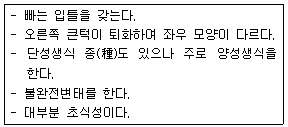
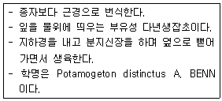

식물보호기사 (2010-03-07 기출문제)
1과목: 식물병리학
1. 동형접합의 단일우성 저항성(RR) 품종과 감수성(rr) 품종을 교배하였을 때 나온 F1의 표현형은? (단, R은 r에 대하여 완전우성이다.)
- 모두 저항성
- 모두 감수성
- 반은 저항성 반은 감수성
- 알 수 없음
(정답률: 74%)

2. 세포벽 성분의 차이에 의한 그램염색 반응은 매우 뚜렷하여 Gram 반응으로 세균을 분류할 수 있다. 그램 음성 세균끼리만 짝지어진 것은?
- Agrobacterium, Pantoea
- Xanthomonas, Bacillus
- Streptomyces, Pseudomonas
- Bacillus, Erwinia
(정답률: 62%)
3. 기주식물의 저항성과 병원체의 병원력의 균형은 기주와 병원체가 오랜 시간 함께 균형을 맞추며 생존해 왔다는 것을 의미한다. 이러한 저항성과 병원성의 단계적 진화를 설명할 수 있는 가설은?
- 우열의 개념
- 유전자 재조합설
- 유전자 대 유전자 개념
- 불완전 우성
(정답률: 88%)
4. 병원체가 곤충의 몸에서 월동하는 것은?
- 담배 모자이크 병
- 벼 줄무늬잎마름병
- 보리 줄무늬모자이크병
- 감자 X 바이러스병
(정답률: 75%)
5. 세포벽이 없는 원형생물로 인공배지에 배양이 되지 않으며 곤충에 매개되는 특성이 있고 세균과 바이러스의 중간 형태로 알려진 식물병원 미생물은?
- 아메바
- 원생동물
- 프라이온
- 파이토플라스마
(정답률: 96%)
6. 대추나무 빗자루병은 어떻게 전염되는가?
- 파이토플라스마 병원체가 비산하여 병을 전염한다.
- 매개충인 마름무늬 매미충에 의하여 병원체가 전염된다.
- 병원체가 하늘소에 의하여 전염된다.
- 감염된 나무에서 수확한 종자를 심어서전염된다
(정답률: 78%)
7. 병원균에 대하여 항균력이 있는 미생물을 이용하여 방제하는 방법은?
- 화학적 방제
- 경종적 방제
- 생물적 방제
- 물리적 방제
(정답률: 93%)
8. 지표식물인 천일홍에 인공 즙액을 접종한 결과로 진단할 수 있는 병은?
- 벼 흰잎마름병(BLB)
- 감자 X 바이러스(PVX)
- 벼 줄무늬잎마름병(RSV)
- 뽕나무 오갈병(MLO)
(정답률: 70%)
9. 병징이 나타난 곳에서 병자각을 볼 수 있는 병은?
- 배나무 줄기마름병
- 벼 이삭누룩병
- 오이 잘록병
- 옥수수 오갈병
(정답률: 50%)
10. 식물병의 제 1차 전염기관으로 거리가 먼 것은?
- 균핵
- 균사
- 자낭포자
- 유주자
(정답률: 69%)
11. 주로 풍매전반을 하는 병은?
- 배추 무사마귀병
- 배나무 붉은별무늬병
- 오이 모자이크바이러스병
- 식물의 모잘록병
(정답률: 75%)
12. 비닐하우스에서 재배하는 작물이 노지작물보다 병이 적게 발생하는 이유로 가장 적합한 것은?
- 비닐하우스는 외부로부터 침입하는 전염원을 차단한다.
- 비닐하우스는 노지보다 온도가 높다.
- 비닐하우스는 노지보다 수분 증발량이 많다.
- 비닐하우스는 물을 인위적으로 공급하여 재배 한다.
(정답률: 89%)
13. 식물체의 표피를 직접 뚫고 침입이 가능한 병원균은?
- 벼 도열병균
- 감귤 궤양병균
- 담배 모자이크병균
- 대추나무 빗자루병
(정답률: 57%)
14. 식물병원균이 분비하는 물질로서 직접, 간접적으로 병원성에 관여하는 물질이 아닌 것은?
- 효소
- 질소질 비료
- 독소
- 호르몬
(정답률: 76%)
15. 병원균이 감염에 의하여 식물체 속에 형성되는 페놀(phenol)류를 바르게 설명한 것은?
- 저항성 기작과 관련이 있는 물질
- 이병성 기작과 관련이 있는 물질
- 침투성 농약의 분해 산물
- 에너지원으로 사용되는 물질
(정답률: 75%)
16. 소나무 잎마름병(Pseudocercospor a)의 병징은?
- 봄에 잎 끝부분이 갈색으로 변한다.
- 봄에 잎 전체가 갑자기 갈색으로 변한다.
- 봄에 잎에 띠 모양의 황색반점이 생긴다.
- 봄에 신초와 잎이 시들고 구부러진다.
(정답률: 57%)
17. 중합효소연쇄반응(PCR)법은 무엇을 증폭시키는 것인가?
- 탄수화물
- 단백질
- DNA
- RNA
(정답률: 71%)
18. 벼 도열병균의 레이스를 구분할 때 사용하는 판별품종이 아닌 것은?
- 인도계(T) 품종군
- 일본계(N) 품종군
- 필리핀계(R) 품종군
- 중국계(C) 품종군
(정답률: 86%)
19. 맥각병과 가장 관계가 깊은 설명은?
- 균핵을 먹으면 중독을 일으킨다.
- 보리의 수량을 저하시킨다.
- 유모기 때 특히 피해가 크다.
- 위조 현상을 일으킨다.
(정답률: 77%)
20. 잣나무 털녹병의 전염경로를 포자형으로 바르게 설명한 것은?
- 잣나무 하포자 → 송이풀 동포자 → 송이풀 하포자 → 잣나무에 침입
- 잣나무 담자포자(소생자) → 송이풀 하포자 → 송이풀 동포자 → 잣나무에 침입
- 잣나무 녹포자 → 송이풀 하포자 → 송이풀 녹포자 → 송이풀 동포자 → 잣나무에 침입
- 잣나무 녹포자 → 송이풀 하포자 → 송이풀 동포자 → 송이풀 담자포자(소생자) → 잣나무에 침입
(정답률: 78%)
2과목: 농림해충학
21. 해충 방제에 대한 설명으로 틀린 것은?
- 해충방제는 생물학적 측면과 경제적인 측면에 기초를 두고 수행한다.
- 포장에 해충이 있으면 무조건 방제한다.
- 방제는 해충밀도의 밀접한 관계가 있다.
- 방제결정은 해충에 의한 피해액과 방제비와의 관계에서 결정한다.
(정답률: 85%)
22. 해충과 가해습성의 연결이 틀린 것은?
- 복숭아삼식나방 - 유충이 과실을 파먹는다.
- 이화명 나방 - 유충이 줄기 속을 파먹는다.
- 청동방아벌레 - 유충이 잎을 가해한다.
- 고자리 파리 - 유충이 지하부를 가해한다.
(정답률: 67%)
23. 성충이 되어서도 날개가 없는 것은?
- 꽃노랑총채벌레
- 배추흰나비
- 귀뚜라미
- 벼룩
(정답률: 82%)
24. 거미강의 특징으로 옳은 것은?
- 변태를 한다.
- 더듬이를 가지고 있어 이동이 빠르다.
- 몸의 구분은 머리ㆍ가슴과 배의 2부분으로 되어 있다.
- 겹눈과 홑눈으로 되어 있다.
(정답률: 78%)
25. 벼물바구미에 대한 설명으로 틀린 것은?
- 단위생식을 한다.
- 유충으로 월동한다.
- 유충이 땅속에서 뿌리를 가해한다.
- 성충은 벼 잎을 가해한다.
(정답률: 74%)
26. 누에의 식성은 어디에 속하는가?
- 단식성
- 잡식성
- 광식성
- 부식성
(정답률: 78%)
27. 다음 중 1세대의 기간이 가장 긴 해충은?
- 이화명나방
- 애멸구
- 말매미
- 고자리파리
(정답률: 81%)
28. 사과 과수원에 복숭아삼식나방의 성충 발생정도를 예찰하는 방법으로 가장 적합한 것은?
- 성페로몬 트랩
- 황색 수반 트랩
- 말레이즈 트랩
- 유아등
(정답률: 77%)
29. 농약의 부작용으로 볼 수 없는 것은?
- 자연계의 균형 파괴
- 약제저항성 해충의 출현
- 동물상의 다양화
- 잔류독성
(정답률: 92%)
30. 벼오갈병을 매개하는 해충명은?
- 흰등멸구
- 애멸구
- 끝동매미충
- 벼멸구
(정답률: 75%)
31. 접촉독, 식독작용 및 흡입독 작용을 가지며, 살충력이 극히 강하고 작용범위도 넓으나 포유류에 대한 독성이 매우 강하여 농약잔류허용기준이 고시된 농약은?
- 파라치온
- 비산석회
- 니코틴
- 피레스린
(정답률: 76%)
32. 다음 설명하는 곤충 목(目)은?

- 딱정벌레목
- 총채벌레목
- 흰개미목
- 나비목
(정답률: 81%)
33. 유충의 발육과 성충의 생식활동에 영향을 주는 유약호르몬을 분비하는 곤충의 기관은?
- 알라타체(corpus allatum)
- 카디아케체(corpora cardiaca)
- 앞가슴샘(prothoracic gland)
- 가슴샘(thoracic gland)
(정답률: 77%)
34. 곤충의 내부구조 중 주요 역할이 체내 수분의 증산을 억제하는 기능을 갖는 것은?
- 원표피(procuticle)
- 외표피(epicuticle)
- 내원표피(endocuticle)
- 진피세포(epidermis)
(정답률: 75%)
35. 곤충의 종류별 휴면이 나타나는 발육단계로 옳은 것은?
- 미국흰불나방 - 배자발생기(胚子生期)
- 누에 - 유충기(幼蟲期)
- 이화명나방 - 용기(蛹期)
- 오리나무잎벌레 - 성충기(成蟲期)
(정답률: 54%)
36. 주요 산림해충으로만 나열된 것은?
- 미국흰불나방, 북방수염하늘소
- 솔나방, 흰등멸구
- 멸강나방, 솔잎혹파리
- 왕바구미, 혹명나방
(정답률: 72%)
37. 곤충의 변태와 생활사에 관한 설명으로 틀린 것은?
- 완전변태에서는 유충과 번데기 구분이 뚜렷하다.
- 약충은 완전변태에서 성충이 되기 전까지 어린 벌레를 말한다.
- 번데기가 탈피하여 성충이 되는 것을 우화라고 한다.
- 산란전기(産卵前期)란 번데기에서 탈피하여 성충이 된 후부터 알을 낳기 전까지의 기간을 말한다.
(정답률: 61%)
38. 휴면에 대한 설명으로 틀린 것은?
- 생리적 조절을 통하여 때와 장소에 적합하도록 생존율을 높인다.
- 불리한 환경조건, 특히 저온기간 동안에 내한성을 유발 시킨다.
- 불리한 조건이 사라지고 먹이가 생겼을 때 발육을 회복시킨다.
- 휴면을 유기하는 환경조건은 반드시 불리한 것이다.
(정답률: 78%)
39. 해충에 대한 식물의 저항성 중 특히 해충의 생장이나 생존에 불리하게 작용하는 것은?
- 비선호성(nonpreference)
- 항접근성(antigenosis)
- 항생성(antibiosis)
- 내성(tolerance)
(정답률: 56%)
40. 벼룩잎벌레에 대한 설명으로 옳은 것은?
- 고추의 가장 대표적인 해충이다.
- 성충이 뿌리를 가해한다.
- 일반적으로 작물이 어린 시기에 피해가 많다.
- 번데기로 월동한다.
(정답률: 73%)
3과목: 재배학원론
41. 토양공기 중 산소(O2)와 탄산가스(CO2)의 농도는 대기와 비교하여 어떻게 다른가?
- 대기와 동일하다.
- 산소농도는 낮고 탄산가스 농도는 높다.
- 산소농도는 높고 탄산가스 농도는 낮다.
- 산소농도는 낮아도 탄산가스 농도는 변함이 없다.
(정답률: 74%)
42. 내병성의 특성을 다른 품종에 옮기려고 할 때 가장 효과적인 방법은?
- 계통육종법
- 집단육종법
- 여교배육종법
- 다계교잡법
(정답률: 73%)
43. 토양 pH가 5.5 일 때의 토양반응은?
- 극도의 강산성
- 강산성
- 중성
- 약알칼리성
(정답률: 65%)
44. 나팔꽃 대목에 고구마 순을 접목하여 개화를 유도하는 이론적 근거는?
- 접목 효과
- G-D 균형
- T/R 율
- C/N 율
(정답률: 54%)
45. 식물호르몬의 재배적 이용에 대한 설명으로 틀린 것은?
- 사과의 낙과를 방지하기 위하여 옥신을 살포한다.
- 배추의 개화를 유도하기 위하여 지베렐린을 살포한다.
- 조직배양의 세포분열을 위하여 시토키닌을 첨가한다.
- 감의 떫은맛을 없애기 위하여 아브시스산을 처리한다.
(정답률: 53%)
46. 혼파(混播)의 이점이 아닌 것은?
- 비료성분의 효율적 이용
- 잡초발생의 경감
- 건초 제조상의 이점
- 파종작업이 편리
(정답률: 58%)
47. 찰벼에 메벼의 화분을 수분하면 그 F1 종자의 배유가 메벼의 형질을 보이는 현상은?
- Xenia
- Apomixis
- Pseudogamy
- Chimera
(정답률: 58%)
48. 대기오염물질 중 독성이 매우 강하여 10ppb의 낮은 농도에서도 피해를 주며, 잎의 끝이나 가장자리가 백변하는 장애가 나타나는 것은?
- 아황산가스
- 불화수소
- 암모니아가스
- 질소산화물
(정답률: 66%)
49. 화곡류 작물에 흡수되어 표피조직을 강하게 하여 병충해 저항을 크게 하는 것은?
- 칼슘(Ca)
- 칼륨(K)
- 철(Fe)
- 규소(Si)
(정답률: 76%)
50. 같은 종 내의 다른 개체 간에 통신수단으로 체외로 분비하는 휘발성 화합물로 암수의 만남과 교미 등의 생식활동 또는 사회생활을 하는 집단에서의 개체들의 생리현상에 영향을 끼치는 물질은?
- 페로몬(pheromone)
- 테르펜(terpene)
- 기피제(repellant)
- 화학불임제(chemosterilant)
(정답률: 86%)
51. C3식물과 C4식물의 형태와 생리적 특성으로 옳은 것은?
- C4식물은 Kranz 구조가 있다.
- C3식물은 물 이용효율이 좋다.
- C3식물의 CO2보상점은 C4 보다 낮다.
- C4식물의 광포화점은 C3 보다 낮다.
(정답률: 67%)
52. 한지형(寒地型, 북방형) 목초에 해단되는 것은?
- 수단그라스, 라이그라스
- 티머시, 알팔파
- 버뮤다그라스, 매듭풀
- 수수, 옥수수
(정답률: 79%)
53. 작물 수량을 구성하는 요소에 대한 설명으로 옳은 것은?
- 환경조건은 변하지 않으나 유전성과 재배기술은 지속적으로 변화한다.
- 수량은 작물의 고유한 특성이므로 재배 기술에 따라 변화하지 않는다.
- 작물의 품종 개발로 재배 기술을 완전하게 극복 할 수 있다.
- 환경 조건은 인위적으로 조절이 가능한 경우도 있다.
(정답률: 75%)
54. 춘화처리(Vernalization)의 농업적 이용과 가장 관련성이 적은 것은?
- 대파(代播) 할 수 있다.
- 성전환(性轉換)이 가능하다.
- 채종(採種)에 이용될 수 있다.
- 촉성재배(促成栽培)가 가능하다.
(정답률: 75%)
55. 중경(中耕)의 효과로 가장 거리가 먼 것은?
- 토양내 산소투입
- 유해가스의 방출
- 잡초방제
- 병충해방제
(정답률: 59%)
56. 주로 영양번식으로 번식시키는 작물은?
- 고구마
- 옥수수
- 밀
- 삼(대마)
(정답률: 84%)
57. 칼리의 표준시비량이 15kg/10a일 경우, 염화칼리(KCl)로 칼리를 공급할 때 10a 당 시비량은? (K의 원자량은 39, Cl의 원자량은 36)
- 약 5kg
- 약 10kg
- 약 19kg
- 약 29kg
(정답률: 36%)
58. 씨감자(절단편)의 휴면타파를 위하여 지베렐린을 처리하고자 한다. 2ppm 지베렐린 수용액에 침지 하는 가장 적당한 시간은?
- 30~60분
- 3~4시간
- 5시간
- 7시간
(정답률: 66%)
59. 벼의 생육단계에서 냉해에 가장 약한 시기는?
- 묘대기
- 활착기
- 생식세포 감수분열기
- 유숙기
(정답률: 75%)
60. 기계이앙 벼 재배용 상자육묘에서 상토의 최적 pH는?
- 7.5 ~ 8.5
- 5.5 ~ 6.5
- 4.5 ~ 5.5
- 3.5 ~ 4.5
(정답률: 58%)
4과목: 농약학
61. 파라치온 등 유기인계 살충제의 가장 큰 작용 특성은?
- 분해가 느리기 때문에 약효지속 기간이 길다.
- 살충력이 강하고 광범위하게 사용된다.
- 인축에 대해 독성이 약한 편이다.
- 알카리성 물질에 분해가 더딘 편이다.
(정답률: 71%)
62. 다음 농약 중 식물 전멸제초제는 어느 것인가?
- 글리포세이트 액제
- 펜디메탈린 유제
- 클레토딤 유제
- 이사-디 액제
(정답률: 72%)
63. 어독성의 구분은 잉어의 반수치사농도(mg/L)를 기준으로 구분하는데 어독성 Ⅰ급의 기준은?
- 0.2 미만
- 0.5 미만
- 0.2이상 2미만
- 0.5이상 2미만
(정답률: 71%)
64. 다음 중 요소계 제초제는?
- linuron
- 2.4 - D
- dicanba
- asulam
(정답률: 72%)
65. 살충제의 해충에 대한 복합저항성이란?
- 살충작용이 다른 2종 이상에 대하여 동시에 해충이 저항성을 나타내는 현상
- 어떤 살충제에 대하여 저항성이 발달한 해충이 한번도 사용한 적이 없지만 작용기구가 같은 살충제에 저항성을 나타내는 현상
- 어떤 해충개체군 내에 대다수의 개체가 해당 살충제에 대하여 저항력을 가지는 해충계통이 출현되는 현상
- 동일 살충제를 해충개체군 방제에 계속 사용하면 저항력이 강한 개체만 만들어지는 현상
(정답률: 67%)
66. 리바이짓드 유제 30%를 500배로 희석해서 10a 당 8말을 살포하여 해충을 방제하고자 할 때 리바이드짓드 유제 30%의 소요량은 몇 mL 인가? (단, 1말은 18L로 한다.)
- 144
- 188
- 244
- 288
(정답률: 56%)
67. 농약의 자체검사 및 신청검사의 기준에 대한 설명중 틀린 것은?
- 분제 및 입제의 최대모집단수량은 50톤이다.
- 모집단의 소포장수량 5000개 이하에 대한 발취 개체 수량은 50개이다.
- 자체검사필증의 부착 및 표시상태는 뽑아낸 시료 전량에 대하여 외관 검사한다.
- 신청검사하여 합격된 농약은 농약의 품질 관리를 위하여 반드시 직권검사를 하여야 한다
(정답률: 64%)
68. 광범위 농용해충약 카보(carbofur an)입제에 대한 설명으로 틀린 것은?
- 약효지속 기간이 매우 길다.
- 식도제로 입을 통해 충체 내로 들어가 독작용을 하는 살충제이다.
- 속효성이면서 지효성이다.
- carbamate계 살충제로 비교적 안정한 화합물이다.
(정답률: 53%)
69. NOEL(No Observed Effect Level )이란?
- 일일섭취허용량
- 식품 중 잔류농약의 허용기준
- 농약이 잔류할 우려가 있는 식품 중의 잔류평균
- 일생동안 매일 섭취하여도 아무런 영향을 주지 않는 약량
(정답률: 75%)
70. 멸구 방제에 사용되는 페노뷰카브(밧사)유제를 화학적 조성에 따라 분류하면 어느 것에 해당되는가?
- 유기인계
- 카바메이트계
- 유기염소계
- 유기유황계
(정답률: 69%)
71. 다음 제초제와 그 작용기작이 옳지 않게 짝지어진 것은?
- 옥신작용의 교란 - 트리아진계
- 단백질합성저해 - 카바메이트계
- 세포분열저해 - 디니트로아닐린계
- 엽록소형성저해 - 피라졸계
(정답률: 53%)
72. 그 자체만으로는 약효가 없으나 농약제품에 첨가할 경우 농약의 약효에 대하여 상승작용을 나타내는 보조제는?
- 증량제
- 유화제
- 협력제
- 유기용제
(정답률: 65%)
73. 농약의 입제(粒劑)에 대한 설명으로 옳지 않는 것은?
- 제조과정이 다른 제형보다 간단하고 값이 저렴하다
- 살포가 용이하고 환경오염이 적다.
- 입자가 크므로 농약을 살포하는 농민에 대하여 안전성이 높다.
- 다른 제형에 비하여 많은 양의 주성분을 투여되어야 목적하는 방제효과를 얻을 수 있다.
(정답률: 52%)
74. 다음 중 농약의 혼용에 있어서 불합리한 경우는?
- Omethoate + 석회유황합제
- Maneb + Dichlorvos
- IBP + Fenitrothion
- Edifenphos + Fenthion
(정답률: 68%)
75. 농용항생제에 대한 설명으로 옳지 않은 것은?
- 다른 미생물의 발육 또는 대사작용을 억제시키는 생리작용을 지닌 물질을 말한다.
- 글리서풀빈(griseofulvin)은 주로 토마토의 궤양병 방제제로 사용된다.
- 가수가마이신(Kasugamycin) 은 단백질 합성을 저해하는 작용을 하는 약제이다.
- 스트렙토마이신(Streptomycin) 의 제품은 염산염과 황산염이 주로 사용된다.
(정답률: 52%)
76. 농약을 희석액으로 살포에 의하지 않고 농약의 유효성분을 병충해 등 서식부위에 직접적으로 접촉하게 하는 사용방법이 아닌 것은?
- 분무법
- 훈증법
- 도포법
- 도말법
(정답률: 40%)
77. 농약의 구비조건으로 틀린 것은?
- 적은 양으로도 약효가 확실하여야 한다.
- 사용 작물에 대하여 약해를 일으키지 않아야 한다.
- 인축에 대하여 피해를 주지 않아야 한다.
- 다른 약제와 혼용이 어려워야 한다.
(정답률: 88%)
78. 파라치온은 인체의 조직과 혈액 중의 콜린에스테라제와 결합해서 어느 것이 축적되어 중독 증상을 일으키는가?
- 콜린(Choline)
- 초산(Acetic acid)
- 아세틸콜린(Acetyl Choline)
- 인산(Phosphoric acid)
(정답률: 75%)
79. 다음 살충제 중 사과 진딧물 방제에 주로 쓰이는 침투성 약제는?
- 메타시스톡스(demeton-S-metyl)
- 다이아지논(diazinon)
- 파라치온(parathion)
- 이피엔(EPN)
(정답률: 39%)
80. 항생제 계통의 살균제인 Streptom ycin에 대한 설명으로 옳은 것은?
- 살균기작은 SH효소에 의한 핵산합성저해이다.
- 수화제와 액제가 등록되어 벼의 도열병 방제용으로 살포된다.
- 저독성 약제로 세균성병 방제에 사용된다.
- 농용신 수화제는 Streptomycin이 80% 기타 증량제가 20% 이다.
(정답률: 36%)
5과목: 잡초방제학
81. 제초제의 주요 작용반응기가 아닌 것은?
- 카르복시기
- 황산기
- 아미노기
- 히드록시기
(정답률: 64%)
82. 제초제의 안전성에 대한 설명으로 틀린 것은?
- 재배자는 자신의 재배지에 발생되는 잡초의종 등을 정확히 파약해야 한다.
- 효과가 좋았던 제초제는 연속하여 반복 사용한다.
- 꼭 필요한 양의 제초제를 사용해야 한다.
- 관련지도사와 상담하여 약제를 처리하는 것이 좋다.
(정답률: 88%)
83. 다음은 어떤 잡초에 대한 설명인가?

- 올미
- 벗풀
- 가래
- 너도방동사니
(정답률: 69%)
84. 광엽잡초와 화본과잡초의 분류로 옳은 것은?
- 광엽잡초 - 돌피
- 광엽잡초 - 명아주
- 화본과잡초 - 여뀌
- 광엽잡초 - 바랭이
(정답률: 64%)
85. 밭작물 재배지의 잡초 방제에 대한 설명으로 틀린 것은?
- 논보리에서는 뚝새풀이 우점하고 밭보리에서는 광엽잡초가 우점한다.
- 옥수수는 초장이 크고 광합성 효율이 높아 잡초에 대한 경합력이 비교적 강하다.
- 두류의 경우 맥후작보다 단작을 할 경우 생육 기간이 길어 제초 노력이 적게 든다.
- 맥류 사이에서 잡초에 대한 경합력은 밀보다 보리가 강하나 제초제에 대한 저항성은 보리보다 밀이 강한 편이다.
(정답률: 61%)
86. 4%의 2,4-D 농도는 몇 ppm인가?
- 40,000ppm
- 4,000ppm
- 400ppm
- 40ppm
(정답률: 64%)
87. 벼와 어떤 잡초가 경합할 때 가장 피해가 큰가?
- 강피, 참새피
- 알방동사니, 별꽃
- 조개풀, 마디꽃,
- 가막사리, 바랭이
(정답률: 78%)
88. 잡초 종자의 특징에 대한 연결로 틀린 것은?
- 미국가막사리, 도꼬마리 - 낚시모양의 돌기
- 박주가리, 망초 - 낙하산모양의 깃털
- 잡초성 벼 - 탈립성
- 메귀리, 도깨비바늘 - 표면 끈끈이
(정답률: 72%)
89. 우리나라에서 개발된 최초의 신물질 제초제로 pyrimidinyloxysalicyli c acid계 제초제는?
- pyrazolate
- pyrazoxyfen
- pyribenzoxim
- Bentazon
(정답률: 69%)
90. 작물과 잡초간의 경합에 관여되는 주된 인자는?
- 빛, 이산화탄소, 산소
- 산소, 영양소, 이산화탄소
- 이산화탄소, 토양, 수분
- 영양소, 빛, 수분
(정답률: 80%)
91. 작물과 잡초의 경합 중 양분경합에서 수량에 가장 크게 관여하는 비료성분은?
- 마그네슘(Mg)
- 질소(N)
- 칼슘(Ca)
- 황(S)
(정답률: 86%)
92. 잡초의 생육특성 중 선점(head-sta rt) 현상이란?
- 고온조건에서 광합성 능력이 높은 현상
- 불량환경에 대한 발아력이 높은 현상
- 잡초밀도 변화에 따라 유연하게 대응하는 현상
- 주어진 지표면을 먼저 점유한 잡초가 후에 발생한 잡초보다 경합에 유리한 현상
(정답률: 81%)
93. 잡초 종자의 휴면타파법 중 그 효과가 크게 기대되지 않는 것은?
- 종피 피상법
- 자외선 처리
- 저온 ㆍ 습윤처리
- 후숙
(정답률: 61%)
94. 작물파종 후 처리된 제초제는 대부분 표층 어느 정도에서 약제가 흡수되는가?
- 표층 1 ~ 2 cm
- 표층 5 ~ 10 cm
- 표층 10 ~ 15 cm
- 표층 15 ~ 20 cm
(정답률: 58%)
95. R1 - NHC - O R2를 기본 골격으로 갖는 제초제군은?
- 페녹시계 제초제
- 니트릴계 제초제
- 요소계 제초제
- 카바메이트계 제초제
(정답률: 51%)
96. 습지나 물속에서 자라는 잡초의 발아시 산소 요구도 경향은?
- 밭토양에서 자라는 잡초보다 낮다.
- 밭토양에서 자라는 잡초보다 높다.
- 밭토양에서 자라는 잡초와 비슷하다.
- 산소보다 이산화탄소에 대한 요구도가 더 높다
(정답률: 65%)
97. 호르몬형 제초제가 아닌 것은?
- 2,4-D
- 디캄바
- MCPP
- 스템에프 34
(정답률: 51%)
98. 발생지에 따른 잡초의 분류로 틀린 것은?
- 논잡초 - 여뀌바늘, 올챙이고랭이, 쇠털골
- 밭잡초 - 비름, 바랭이, 깨풀
- 과수원, 비경지잡초 - 망초, 닭의장풀, 참소리쟁이
- 잔디밭잡초 - 세포아풀, 미국자리공, 사마귀풀
(정답률: 52%)
99. 제초제 저항성 잡초의 출현을 야기 시킬 수 있는 경우는?
- 혼합제초제를 사용한다.
- 동일한 제초제를 매년 연용한다.
- 동일 계열이 아닌 다른 제초제를 혼합하여 사용한다.
- 다른 계열의 제초제와 교호로 사용한다.
(정답률: 79%)
100. 논 잡초방제에 사용되는 카바메이트(carbamate)계 제초제로 나열된 것은?
- 티오벤카브(thiobenacrb), 몰리네이트(molinate)
- 메토라클로르(metolachlor), 알콜(alachlor)
- 디페나미드(diphenamide), 벤설퓨론메틸(bensulfuron-methyl)
- 나프로파마이드(napropamid), 프레틸라클로르(pretilachlor)
(정답률: 60%)